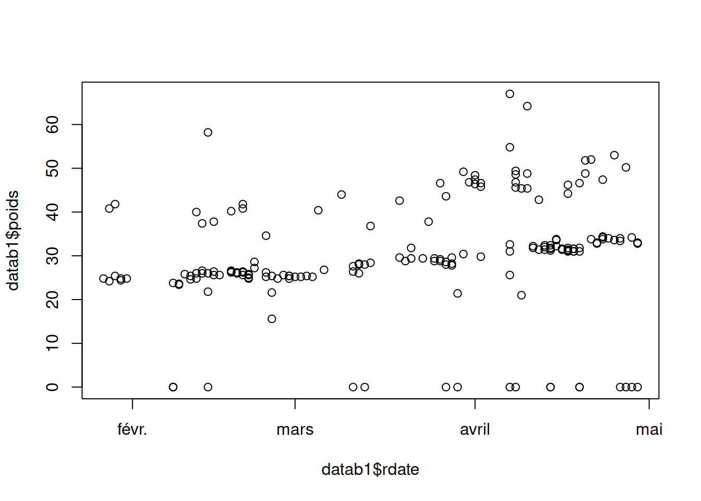
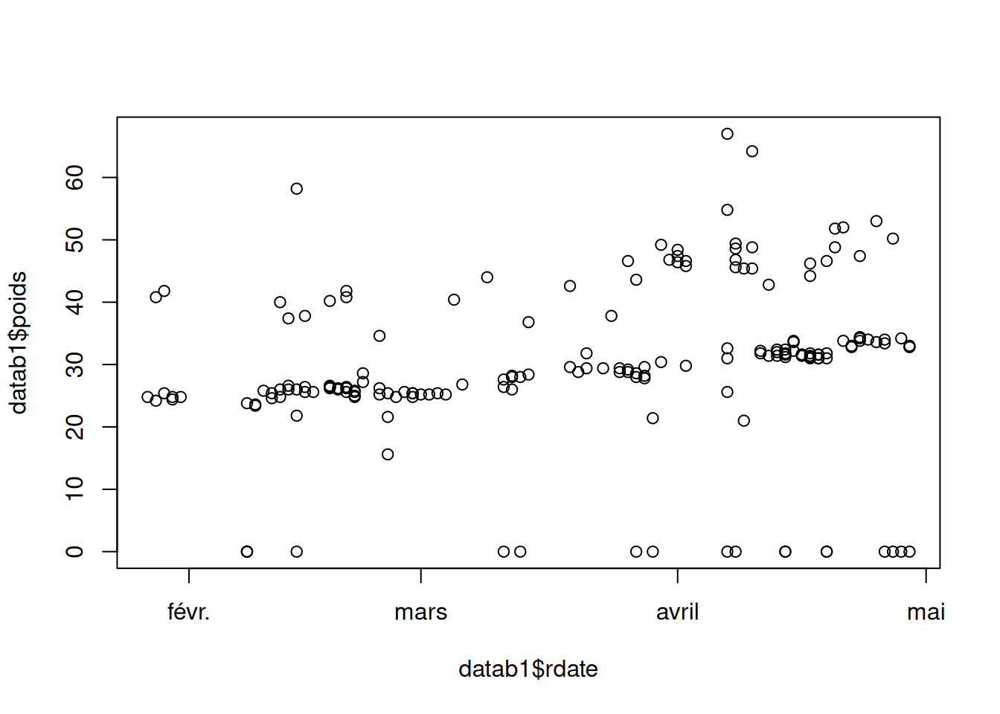
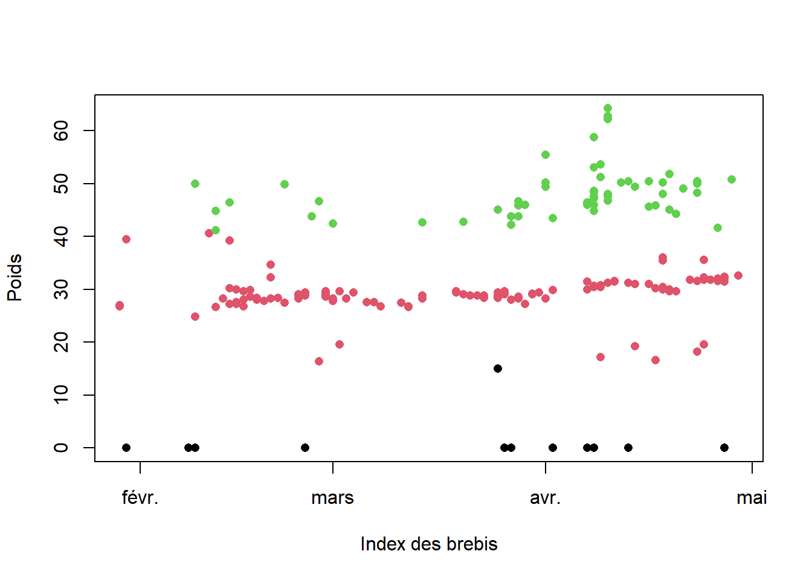
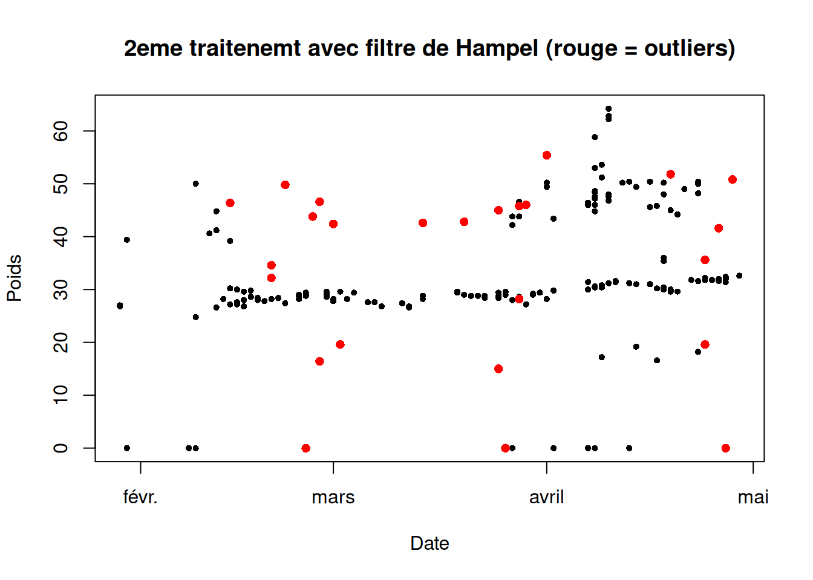
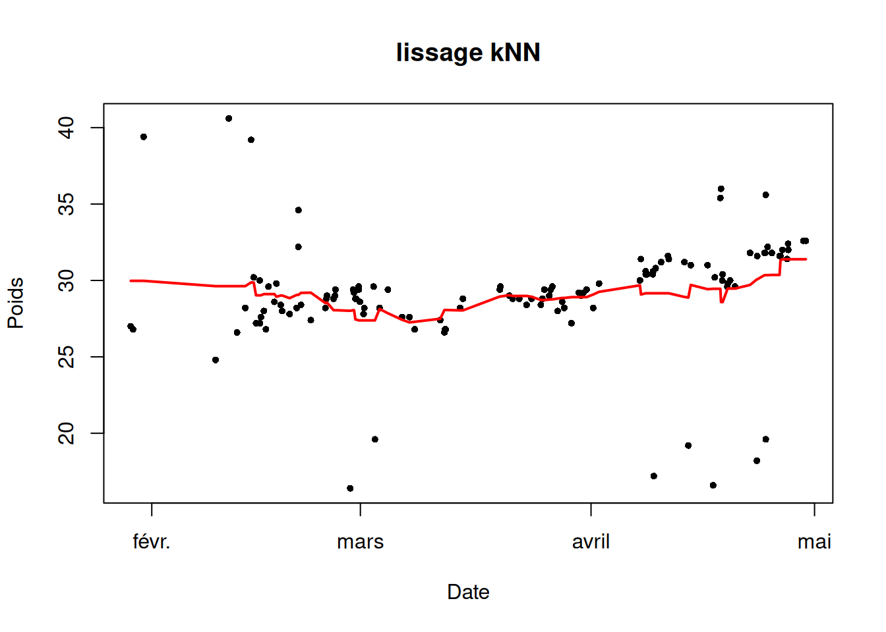
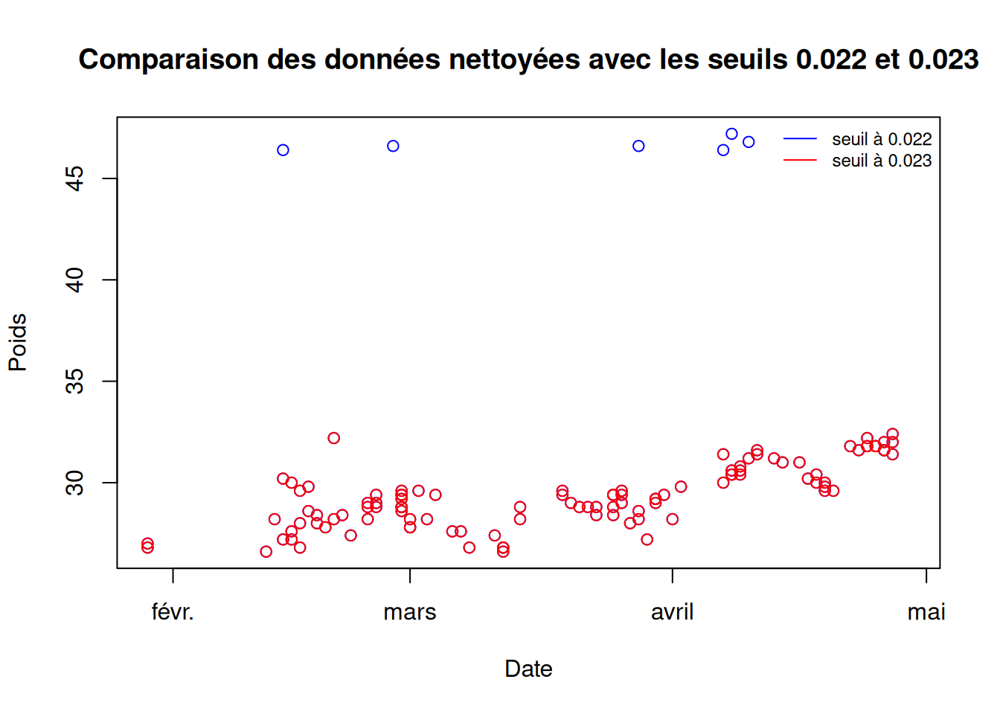

Afficher / masquer le code
data <- read.csv("data_arles2021.csv",sep = ";")
data$rdate <- as.Date(data$rdate,format="%d/%m/%Y")
datab1 <- data[data$RFID=="250 017 033 503 119",]
plot(datab1$rdate,datab1$poids)
L’objectif est de reconstruire, pour chaque brebis, une fonction d’estimation du poids. Comme l’évolution du poids n’est pas strictement linéaire, le problème relève d’une régression non paramétrique sur données temporelles, précédée d’un traitement des observations aberrantes.
Les mesures contiennent des valeurs aberrantes (outliers) dues à des erreurs de mesure ou à des conditions de pesée non représentatives. Ces points peuvent biaiser l’estimation de la tendance et doivent être filtrés avant la modélisation.
Après import et conversion des dates, on visualise la trajectoire brute d’une brebis afin de caractériser l’ampleur du bruit et la présence d’observations atypiques.
data <- read.csv("data_arles2021.csv",sep = ";")
data$rdate <- as.Date(data$rdate,format="%d/%m/%Y")
datab1 <- data[data$RFID=="250 017 033 503 119",]
plot(datab1$rdate,datab1$poids)
Notre approche est donc de classer les outliers via une méthode du K-Means en faisant des groupes de 3. Une pour le surplus de donnée et une pour les donnée proche de 0 consideré comme aberrante.
set.seed(02062002)
km <- kmeans(scale(data$poids), centers = 3, nstart = 25)
data$cluster_raw <- km$cluster
m <- tapply(data$poids, data$cluster_raw, mean)
ordre <- order(m) # Pour trier les numero de cluster pour extraire la bonne tendance
data$cluster <- match(data$cluster_raw, ordre)
datagroupe <- data[data$cluster == 2, ]datab1 <- data[data$RFID=="250 017 033 503 119",]
plot(datab1$rdate,datab1$poids, col = datab1$cluster, pch = 16, xlab = "Index des brebis", ylab = "Poids")
La visualisation par couleur confirme la séparation globale en trois niveaux. On observe néanmoins quelques points atypiques encore présents dans le groupe retenu, ce qui peut induire un biais résiduel dans l’estimation de la tendance.
On effectue un deuxième traitement en effectuant un filtre de Hampel. En effet, le filtre de Hampel détecte les valeurs aberrantes en comparant chaque point à la médiane d’une fenêtre glissante autour de lui, et en le déclarant outlier s’il s’écarte de plus de k fois l’écart robuste calculé localement.
hampel_flag <- function(x, k = 5, t0 = 3){
n <- length(x)
flag <- rep(FALSE, n)
for(i in seq_len(n)){
a <- max(1, i - k)
b <- min(n, i + k)
w <- x[a:b]
w <- w[is.finite(w)]
if(length(w) < 3 || !is.finite(x[i])) next
med <- median(w)
s <- mad(w, constant = 1.4826)
if(!is.finite(s) || s == 0) next
flag[i] <- abs(x[i] - med) > t0 * s
}
flag
}datab1 <- datab1[order(datab1$rdate), ]
flag <- hampel_flag(datab1$poids, k = 5, t0 = 3)
datab1_clean <- datab1[!flag, ]
# visu : points supprimés en rouge
plot(datab1$rdate, datab1$poids, pch=16, cex=.7, xlab="Date", ylab="Poids",
main="2eme traitenemt avec filtre de Hampel (rouge = outliers)")
points(datab1$rdate[flag], datab1$poids[flag], col="red", pch=16)
La tendance est ensuite estimée par une approche non paramétrique de type k plus proches voisins (kNN). Pour un instant t, la prédiction est définie comme la moyenne des k observations dont les instants de mesure sont les plus proches de t. Cette méthode permet d’obtenir une courbe flexible sans imposer de forme paramétrique.
Pour appliquer kNN, la date et l’heure sont converties en une variable temporelle continue (en jours), afin de définir une distance temporelle et d’identifier les voisins les plus proches.
datagroupe$datetime <- as.POSIXct(
paste(format(datagroupe$rdate, "%Y-%m-%d"), trimws(datagroupe$rheure)),
format = "%Y-%m-%d %H:%M",
tz = "Europe/Paris"
)
stopifnot(sum(is.na(datagroupe$datetime)) == 0)
datagroupe$t <- as.numeric(datagroupe$datetime - min(datagroupe$datetime)) / (60*60*24)
rfid <- "250 017 033 503 119"
datab1 <- datagroupe[datagroupe$RFID == rfid, ]
stopifnot(all(c("datetime","t","poids") %in% names(datab1))) # doit passer
datab1 <- datab1[complete.cases(datab1[, c("datetime","t","poids")]), ]
datab1 <- datab1[order(datab1$t), ]On construit manuelement la fonction des K-nn. On décide de prendre arbitrairement k = 15.
knn <- function(t, y, k = 15){
ok <- complete.cases(t, y)
t <- t[ok]; y <- y[ok]
k <- min(k, length(t))
if(k == 0) return(rep(NA_real_, length(y)))
sapply(seq_along(t), function(i){
mean(y[order(abs(t - t[i]))[1:k]])
})
}On partitionne dans une grille afin de pouvoir plot la courbe de regression.
t <- datab1$t
y <- datab1$poids
y_hat <- knn(t, y, k = 15)
ord <- order(t)
plot(datab1$datetime, y, pch = 16, cex = 0.7, xlab = "Date", ylab = "Poids",main = "lissage kNN")
lines(datab1$datetime[ord], y_hat[ord], lwd = 2,col="red")
La droite de regression à l’air de bien suivre la tendance malgrès de petit biais due aux points mal classé.
Une idée pour suprimer les outliers serait de refaire tourner l’algorithme des K-means. Mais il se pourrait que pour une brebis donnée, la première iterration de l’algo ai suffit ce qui morcelerais trop les données.
Le but ici était de coder les méthodes à la main. Bien que on aurait pu utiliser les méthodes de GAM et de spline afin de mieux lisser les données et diminuer le biais causé par les outliers persistant.
Notre seconde approche consiste à estimer la densité de la variable Poids pour chaque brebis. Une fois ceci fait, nous éliminerons les données dont la densité sera inférieure à un certain seuil que nous fixerons.
En observant graphiquement les couples (Date,poids) de nos brebis, on constate qu’on peut catégoriser nos données en trois groupes : les données de poids réelles de la brebis, les poids trop élevés ainsi que ceux qui sont proches de zéro. Ces deux derniers pouvant êtres considéres comme des outliers. Ainsi, nous souhaiterions modéliser notre modèle par un mélange de 3 gaussiennes chacune représentant, nous l’espérons, la modélisation de chacun des groupes de données.
Afin d’estimer notre modèle de mélange gaussien, nous allons procéder par algorithme EM que voici :
EM=function(data, K=3, max_iter=100, tol=1e-6){
ts=data[!is.na(data)]
n=length(ts)
mu_k=as.numeric(quantile(ts,probs=seq(0.25, 0.75, length.out=K)))
sigma_k=rep(sd(ts), K)
eps_k=rep(1/K, K)
loglik_old=-Inf
for (iter in 1:max_iter){
# Etape E
dens=sapply(1:K, function(k)
eps_k[k]*dnorm(ts, mu_k[k], sigma_k[k])
)
dens_sum=rowSums(dens)
dens_sum[dens_sum<tol]=tol
gamma=dens/dens_sum
# Etape M
N_k=colSums(gamma)
eps_k=N_k/n
mu_k=colSums(gamma*matrix(ts,n,K))/N_k
sigma_k=sqrt(colSums(gamma*sweep(matrix(ts,n,K), 2, mu_k, FUN="-")^2)/N_k)
sigma_k[sigma_k<tol]=tol
loglik=sum(log(dens_sum))
if (abs(loglik - loglik_old)<tol) break
loglik_old=loglik
}
list(eps=eps_k, mu=mu_k, sigma=sigma_k, loglik=loglik)
}Pour notre jeu de données test, cet algorithme renvoie les paramètres suivant :
datab1 <- data[data$RFID=="250 017 033 503 119",]
param=EM(data=datab1$poids)
param$eps
[1] 0.1233646 0.5480986 0.3285368
$mu
[1] 6.39531 29.35458 46.94557
$sigma
[1] 8.924545 1.616568 5.927496
$loglik
[1] -687.3411Avec les paramètres précédemment calculés via l’algorithme EM, nous allons dorénavant donner un estimateur de la densité de nos données :
dens=function(x){
d=c()
l=length(x)
for (i in 1:l){
s=c()
for (j in 1:3){
s=c(s,param$eps[j]*dnorm(x[i],param$mu[j],param$sigma[j]))
}
d=c(d,sum(s))
}
return(d)
}
d=dens(datab1$poids)Maintenant que nous avons un estimateur de la densité du poids en fonction du temps, nous allons éliminer les outliers en attribuant une valeur NA lorsque que l’une de nos données a une densité faible pour la loi du mélange gaussien. Ensuite, nous traiterons les NA par algorithme des k plus proches voisins (knn).
clean=function(x,seuil=0.023){
d=dens(x)
l=length(x)
clean=rep(NA,l)
for (i in 1:l){
if (d[i]>= seuil){
clean[i]=x[i]
}
}
return(clean)
}A \(10^{-3}\) près, nous avons évalué le seuil optimum à 0.023. En effet, avec un seuil à 0.022, nous avions encore des valeurs trop élevées qui subsistaient après nettoyage des valeurs abberantes.
clean_data1=clean(datab1$poids,seuil=0.022)
clean_data2=clean(datab1$poids)
plot(datab1$rdate,clean_data1,col='blue',main="Comparaison des données nettoyées avec les seuils 0.022 et 0.023",xlab="Date",ylab="Poids")
points(datab1$rdate,clean_data2,col="red")
legend("topright",legend=c("seuil à 0.022","seuil à 0.023"),col=c("blue","red"),lty=1,cex=0.75,bty="n")
On voit qu’effectivement, pour les valeurs que nous jugons correctes, les données sont confondues. En revanche, pour le seuil à 0.069, quelques outliers persistent. Ce qui confirme que le seuil à 0.07 est le seuil optimum à \(10^{-3}\) près. On affichera en bleu les données qu’on garde et en rouge les données que nous avons retiré.
On peut afficher graphiquement la comparaison entre les données initiales et les données nettoyées :
plot(datab1$rdate,datab1$poids,col='red',main="Comparaison entre les données initiales et les données nettoyées",xlab="Date",ylab="Poids")
points(datab1$rdate, clean_data2, col='blue')
legend("topright",legend=c("Données initiales","données nettoyées"),col=c("red","blue"),lty=1,cex=0.75,bty="n")
Malgré que le seuil ait été choisi de manière optimal, nous remarquons qu’avec cette aproche, nous avons retiré certaines données réalistes. Comme perspective d’amélioration, nous pouvons nous demander si nous aurions pas pu prendre un seuil plus précis, ou bien nous aurions pu choisir une autre méthode d’estimation de la densité, par exemple en prenant un estimateur à noyau. à noter que le choix du seuil ainsi que les paramètres de notre modèle seront différent selon la brebis considérée dans l’étude.
maintenant que nous avons nos données nettoyées, nous pouvons nous attaquer à la régression de celles-ci, afin de modéiser le poids en fonction de pesées dans le temps. Pour ce faire, nous allons utiliser l’algorithme des plus proches voisins, utilisé dans la première partie de notre étude :